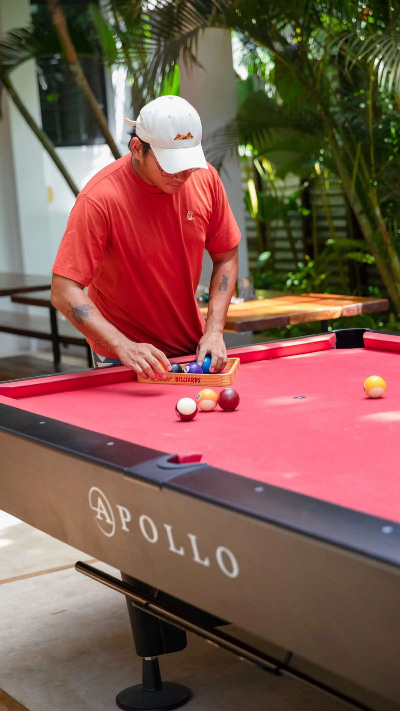
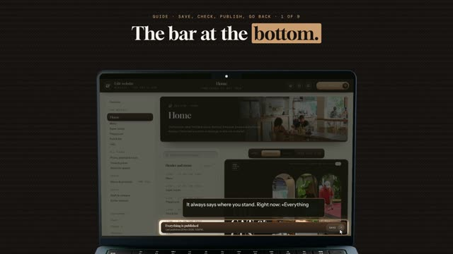
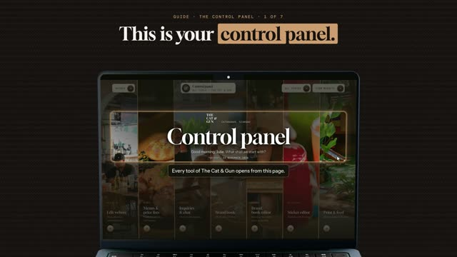

How the website and the tools fit together
Each fact is kept in one place. Every change waits in a draft until you publish it.
Each fact in one place
Phone, address and opening hours are kept once, in Edit website. Change them there and every page follows, including every link to call the house.
Every dish and price is kept once, in Menus & price lists. When you publish, the tool sets the PDF for the next printed menu, checks the PDF word by word against your list and builds the menu page of the website from the same list.
The brand in the Brand book editor
The Brand book editor keeps the colours, the fonts with their roles, the wordmark and the other elements, the photos and the sentences of the house.
The Sticker editor, Print & feed and the Brand book read the brand from there. When you publish a change in the Brand book editor, these tools show it without reloading. Changes to the brand are made only in the Brand book editor.
Draft and publish
Edit website, Menus & price lists, Brand book editor and Sticker editor have the same bar at the bottom. Inquiries & chat works the same way.
The change goes into the draft. Guests do not see it yet. «Undo» takes it back.
Every change waiting in the draft, the old version next to the new one.
The draft goes online. A note helps you find this change later. Only the changed files are uploaded.
Every published state is kept. «Restore» brings one back as a draft, then you publish it.
In Print & feed, «Release» makes a design available for the areas of the house, «Take back» withdraws it.

Guide A2 · 0:47Save, check, publish, go backThe chat without AI
The answers of the chat lie as a file on the website. The search runs in the browser of the guest. When the chat has no answer, the guest can send the question to the house, with a name and a way to reach them.
You enter the answer in Inquiries & chat. From then on the chat gives it to every guest who asks.
 Guide D · 1:18Inquiries & chat
Guide D · 1:18Inquiries & chatThe control panel
The control panel opens every tool. Under each name it shows what is waiting in that tool, and how many visits the website had today.

Guide A1 · 0:38The control panelLesson 02 of 04 · 0 of 4 read
Next lesson: The nine tools
Four lessons in text and pictures.

The nine tools
What each tool is for, and the guide that shows it.

Where it runs and what it costs
Website and tools run in the Cloudflare account of The Cat & Gun, on the free plan.

How the website is built
Six pages, made from finished files, with the photos, sentences and menu of The Cat & Gun.